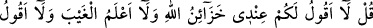
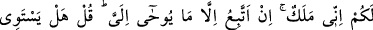
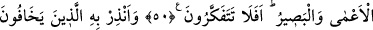
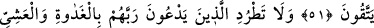
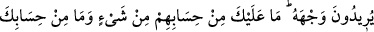
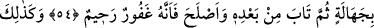
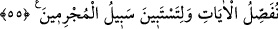

MÜŞRİKLERİN
HZ. PEYGAMBER’DEN FAKİRLERİ
YANINDAN KOVMASINI İSTEMELERİ
50. De ki: Ben size, Allah’ın hazineleri benim yanımdadır, demiyorum. Ben gaybı
da bilmem. Size, ben bir meleğim de demiyorum. Ben, sadece bana vahyolunana
uyarım. De ki: Kör ile gören hiç bir olur mu? Hiç düşünmez misiniz?
51. Rablerinin huzurunda toplanacaklarından korkanları onunla (Kur’an ile) uyar.
Onlar için Rablerinden başka ne bir dost, ne de bir aracı vardır, belki sakınırlar.
52. Rablerinin rızasını isteyerek sabah akşam O’na yalvaranları kovma! onların
hesabından sana bir sorumluluk; senin hesabından da onlara herhangi bir
sorumluluk yoktur ki onları kovup da zalimlerden olasın!
53. “Aramızdan Allah’ın kendilerine lütuf ve ihsanda bulunduğu kimseler de
bunlar mı!” demeleri için onların bir kısmını diğerleri ile işte böyle imtihan ettik.
Allah şükredenleri daha iyi bilmez mi?
54. Âyetlerimize inananlar sana geldiğinde onlara de ki: Selam size! Rabbiniz
merhamet etmeyi kendisine yazdı. Gerçek şu ki: Sizden kim, bilmeyerek bir
kötülük yapar. Sonra ardından tevbe edip de kendini ıslah ederse, bilsin ki Allah
çok bağışlayan, çok esirgeyendir.
55. Böylece suçluların yolu belli olsun diye âyetleri iyice açıklıyoruz.